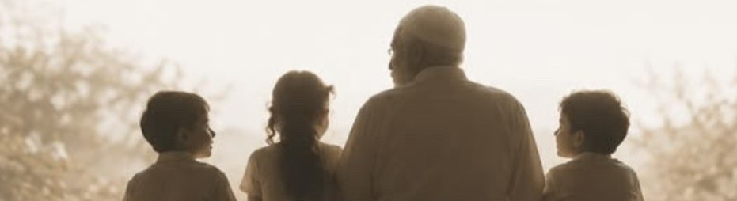

01
01
زاد — عز
خير البر والبحر
ويضم المنتجات التي تحتفي بخيرات الأرض والبحر والنكهات الأصيلة.
بدأت زاد من بيتٍ يعرف قيمة الطعام الحقيقي، ويؤمن أن الجودة ليست تفصيلاً، بل أسلوب حياة.

في عائلتنا، لم يكن العسل مجرد منتج يُباع؛ كان إرثًا بناه والدي، رحمه الله، بمحبةٍ وإتقان، حتى ارتبط اسمه في الطائف بجودة العسل الطبيعي وتنوّع أنواعه. ومنه تعلمنا أن ما يبقى في ذاكرة الناس هو صدق ما نقدّمه، وأن البركة تبدأ من الإحسان في العمل.
ومن هذا الإرث وُلد زاد: امتدادًا لتلك القيم، ولكن برؤية جديدة تناسب الحياة اليوم. نقدّم منتجات تُحضر بمكونات طبيعية، بعناية، وبكميات محدودة، لتصل كما لو أنها خرجت للتو من مطبخ المنزل.
ولأن زاد يحمل روح العائلة قبل أن يحمل اسمها، قُسّم إلى ثلاثة أقسام، يعكس كلٌ منها شغف أحد أفرادها وتوجهه:
01
ويضم المنتجات التي تحتفي بخيرات الأرض والبحر والنكهات الأصيلة.
 02
02
ويهتم بالمنتجات الموسمية والمحاصيل التي تُقدّم في أفضل وقت لها، محافظة على نكهتها وجودتها.
 03
03
ويضم ما يجعل المطبخ أسهل وأكثر دفئًا. من المنتجات اليومية التي تُعدّ لتختصر الوقت دون أن تتنازل عن الجودة.
نطبخ الزيت على نار هادئة ساعتين، ونتركه يبرد ليلة كاملة قبل التعبئة. ما نستعجل شيء.
كل ما في زاد يبدأ من مكوّن نعرف مصدره: تمر من نخل العائلة، فلفل من محصول الموسم، وحليب طازج للزبدة. الوصفة قليلة المكوّنات لأن المكوّن نفسه كافٍ.
نؤمن أن الطعام ليس مجرد وجبة، بل تجربة تبدأ من اختيار المكونات، وتمر بطريقة التحضير، وتنتهي بلحظة تجمع من نحب حول المائدة.
زاد… ليس مجرد علامة تجارية، بل امتداد لقصة عائلة. وإرثٍ بدأ بالأب، ويستمر اليوم بشغف الأبناء، ليصل إلى كل بيتٍ يبحث عن غذاءٍ صادق، بسيط، ومليء بالحياة.